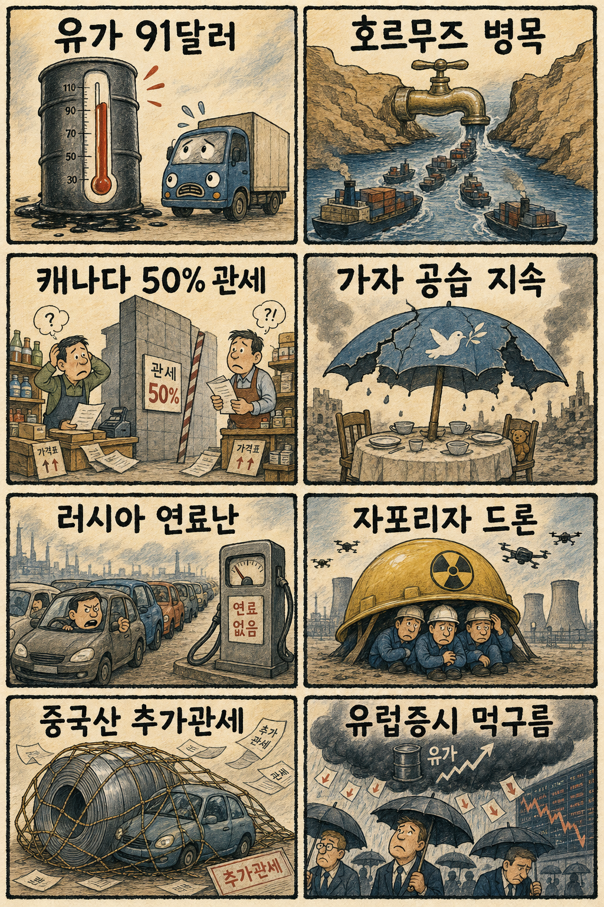
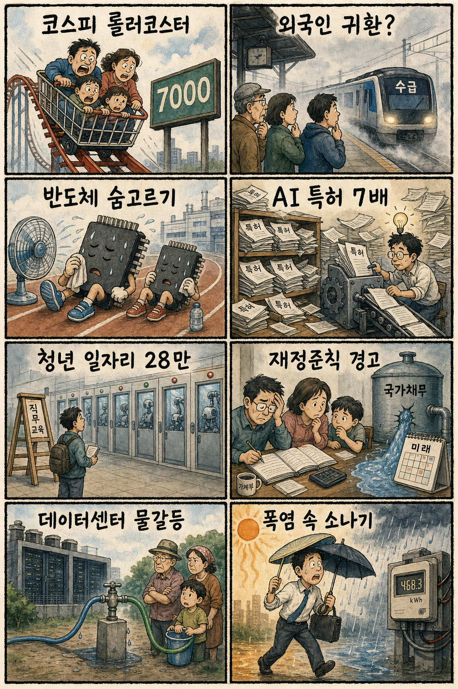

01
인텔 · 99.14→96.68달러 · -2.48%
내용요약 장기금리 상승과 반도체 업종 매도 속에서 시가 대비 2.48% 하락했습니다.
예상여파 국내 반도체도 업황 기대만으로 방어되기보다 외국인 수급과 시초가 갭을 확인해야 합니다.
MORNING_BRIEFING_20260819
작성 시각: 2026-08-19 06:38 KST · 직전 미국 정규장과 2026-08-19 KST 당일 공개 기사 기준
8월 18일 미국 정규장은 장기금리 급등과 중동발 유가 상승이 반도체·성장주를 압박하며 이틀째 하락했습니다. 다우 -0.22%, S&P 500 -0.69%, 나스닥 -1.33%였습니다. 필라델피아 반도체지수 급락 보도가 더해져 국내 반도체에는 경계 신호입니다. 전일 KOSPI도 시초가 대비 -3.62% 밀린 만큼 오늘은 낙폭과대만으로 반등을 단정하지 말고 외국인 현·선물 수급과 6,800선 방어를 먼저 확인해야 합니다.
| 지수 | 종가 | 등락률 | 한국 증시 영향 |
|---|---|---|---|
| 다우존스 | 53,343.40 | -0.22% | 경기민감주 관망 |
| S&P 500 | 7,691.76 | -0.69% | 금리·유가 부담 |
| 나스닥 종합 | 26,289.71 | -1.33% | 반도체·성장주 경계 |
장기금리와 반도체 약세가 기술주를 눌렀습니다.
중동 불안으로 국제유가가 사흘째 올랐습니다.
전일 시가 대비 -3.62%, 6,800선 수급을 봅니다.
검증 문턱과 손익비를 모두 통과한 후보가 없습니다.
8월 18일 보고서는 연휴 뒤 갭 변동성과 유가·금리 상승 속에서 수급·컨센서스·30건 보정 표본·손익비 문턱을 동시에 검증하지 못해 공식 추천을 내지 않았습니다. 게시 당시 판단은 그대로 유지됩니다.
| 시장 | 종가 | 등락률 | 해석 |
|---|---|---|---|
| KOSPI | 6,869.83 | -1.55% | 18일 종가·시가 대비 -3.62% |
| KOSDAQ | 834.20 | -3.52% | 위험선호 급랭 |
| 다우존스 | 53,343.40 | -0.22% | 제한 하락 |
| S&P 500 | 7,691.76 | -0.69% | 금리 부담 |
| 나스닥 | 26,289.71 | -1.33% | 기술주 약세 |
어플라이드 머티리얼즈는 시가 대비 +1.37%였습니다.
애플 +0.81%, 알파벳 +0.51%로 시가 대비 견조했습니다.
AMD와 인텔의 낙폭이 두드러졌고 업종지수 급락이 보도됐습니다.
브렌트유 91달러 돌파는 원료·운송비 민감 업종에 불리합니다.
내용요약 장기금리 상승과 반도체 업종 매도 속에서 시가 대비 2.48% 하락했습니다.
예상여파 국내 반도체도 업황 기대만으로 방어되기보다 외국인 수급과 시초가 갭을 확인해야 합니다.
내용요약 성장주 할인율 부담이 이어지며 시가 대비 2.45% 추가 하락했습니다.
예상여파 국내 인터넷·AI 소프트웨어의 고밸류 종목에도 수급 변동성이 번질 수 있습니다.
내용요약 반도체 업종 약세 속에서도 시가 대비 1.37% 올라 장비주의 선별적 강세를 보였습니다.
예상여파 국내 장비주 심리에 완충 요인이지만 실적·수주를 확인하지 않은 추격은 피해야 합니다.
내용요약 기술주 약세장에서도 시가 대비 1.11% 반등했습니다.
예상여파 위험선호 회복 신호라기보다 종목별 차별화로 보고 국내 성장주 전반으로 확대 해석하지 않아야 합니다.
내용요약 AI 전략 우려를 다룬 보도에도 시가 대비 0.81% 상승하며 방어력을 보였습니다.
예상여파 초대형 기술주의 실적 안정성 선호가 커질 수 있으나 AI 투자 경쟁력 논쟁은 계속될 수 있습니다.
미국 반도체·성장주 약세는 전일 급락한 국내 반도체와 KOSDAQ의 반등 강도를 제한할 수 있습니다. 다만 KOSPI가 전일 시가 대비 3.62% 밀렸기 때문에 장초반 투매 뒤 외국인 현·선물 동반 순매수와 6,800선 회복이 확인되면 기술적 반등 여지는 있습니다. 반대로 유가 91달러대와 원화 약세가 이어지면 항공·화학·운송의 원가 부담이 커집니다. 낙폭과대만으로 시초가를 추격하지 않고 오전 저점 유지와 거래대금 집중을 확인하는 날입니다.
오늘은 추천 없음 — 현금 관망
전일 KOSPI 시가 대비 -3.62%, KOSDAQ -3.74%의 높은 변동성과 미국 반도체 약세 속에서 전일까지의 외국인·기관 수급, 컨센서스 변화, 30건 이상 유사 조건 확률 보정, 예상 손익비 1.5 이상을 동시에 검증해 종합점수 75점·상승확률 60% 문턱을 넘긴 후보가 없습니다. 숫자를 임의로 채우지 않습니다.
관심 연결종목 메모리·낸드, 반도체 장비, 데이터센터 전력은 관찰 대상일 뿐 매수 추천이 아닙니다. 장전 급등 또는 과도한 시초가 갭에서는 추격매수 금지입니다.
외국인 현·선물 수급과 오전 저점 유지를 봅니다.
반도체·성장주 할인율 압력이 진정되는지 확인합니다.
항공·화학 원가와 정유 마진 반응을 나눠 봅니다.
전력 피크와 국지성 침수·작업 안전을 점검합니다.
핵심 요약: AI 경쟁의 병목은 전력망과 파워반도체로 이동하고, 메모리 경쟁은 포스트 HBM과 첨단 패키징으로 확장되고 있습니다. 국내 AI 특허의 빠른 증가가 사업화로 이어지는지, 고성능 AI 허가제 논쟁이 개발비와 공개 생태계를 어떻게 바꿀지도 함께 봐야 합니다.
내용요약 AI 경쟁의 핵심 병목이 연산칩에서 전력망과 발전·송전 인프라로 이동하고 있다는 분석입니다.
예상여파 전력기기·냉각·에너지 효율 투자가 이어질 수 있지만 정책, 수주잔고와 밸류에이션을 분리해 봐야 합니다.
내용요약 르네사스가 AI 관련 반도체 사업을 확대하며 전력 관리용 파워 반도체에 힘을 싣는다는 소식입니다.
예상여파 AI 서버의 전력 밀도가 높아질수록 전력변환 효율과 열관리 부품의 중요성이 커져 공급망 경쟁이 확대될 수 있습니다.
내용요약 인텔이 메모리 사업 철수 이후 차세대 적층·패키징 기반의 포스트 HBM 기술을 겨냥한다는 보도입니다.
예상여파 HBM 경쟁이 대역폭뿐 아니라 패키징·전력효율로 넓어져 삼성전자와 SK하이닉스의 기술 로드맵에 변수로 작용할 수 있습니다.
내용요약 국내 AI 관련 특허가 8년 동안 일곱 배로 늘었지만 산업별 기술 융합 속도에는 차이가 있다는 조사입니다.
예상여파 특허 양의 증가가 제품 매출과 생산성으로 연결되는지, 제조·서비스 현장의 사업화 격차를 줄이는 정책이 중요합니다.
내용요약 고성능 AI의 개발·배포에 허가제를 둘지를 놓고 미국 기술계 인사들의 논쟁이 다시 불붙었다는 소식입니다.
예상여파 안전 규제가 강화되면 모델 개발 비용과 공개 범위가 달라져 글로벌 스타트업과 클라우드 사업자의 경쟁 조건이 바뀔 수 있습니다.
핵심 요약: 중동 불안으로 국제유가가 사흘째 올라 브렌트유 91달러, WTI 84.95달러를 기록했고 호르무즈 공급망 대응이 본격화했습니다. 캐나다 관세 협상과 가자 공습, 러시아 연료난까지 겹치며 에너지·통상 위험이 동시에 커졌습니다.
내용요약 러시아 일부 지역에서 연료 부족으로 주유소에 차량이 길게 늘어서는 상황을 전한 국제 보도입니다.
예상여파 정제·물류 차질이 지속되면 내수 물가와 운송 부담이 커지고 에너지 시장의 지역별 공급 불균형이 심해질 수 있습니다.
내용요약 미국의 캐나다산 제품 50% 관세 발효를 하루 앞두고 정상 간 통화에도 협상이 난항을 겪고 있다는 소식입니다.
예상여파 북미 공급망의 원가와 통상 불확실성이 높아져 자동차·철강·소비재 기업의 가격과 투자 결정에 부담이 될 수 있습니다.
내용요약 이스라엘이 미국 측 평화 구상을 거부한 뒤 가자지구를 다시 공습해 사망자가 발생했다는 보도입니다.
예상여파 휴전 전망이 멀어지면 인도주의 위기와 중동의 안보·에너지 위험 프리미엄이 장기화할 수 있습니다.
내용요약 호르무즈 해협의 물류 불안 속에 사우디아라비아와 UAE가 한국·일본 내 원유 비축 확대를 추진한다는 소식입니다.
예상여파 비축 다변화는 공급 충격을 완충하지만 운송비와 유종별 조달 비용 상승은 국내 정유·화학·항공에 엇갈린 영향을 줄 수 있습니다.
내용요약 중동 불안이 이어지며 WTI가 0.5% 오르고 국제유가가 사흘 연속 상승했다는 보도입니다.
예상여파 에너지발 물가 압력이 장기금리를 자극하면 성장주 할인율과 원유 수입국의 기업 원가 부담이 함께 높아질 수 있습니다.

핵심 요약: 전일 급락 뒤 KOSPI는 외국인의 반도체 수급 지속 여부가 핵심입니다. AI 서버발 낸드 수요가 성장 기대를 더하지만, 청년 고용 감소와 재정준칙 경고, 폭염·소나기는 산업 전환과 생활경제의 부담을 보여줍니다.
내용요약 최근 닷새 동안 외국인이 삼성전자와 SK하이닉스를 대규모 순매수한 뒤 수급 지속 여부를 짚는 개장 전 기사입니다.
예상여파 전일 급락 뒤에도 외국인 현·선물 매수가 이어지는지가 반도체와 KOSPI 반등의 핵심 확인 지표입니다.
내용요약 AI 서버용 저장장치 수요가 확대되며 낸드 시장의 수익 기회가 커지고 있다는 보도입니다.
예상여파 메모리 호황의 범위가 HBM과 D램에서 낸드로 넓어질 수 있으나 가격 상승과 고객 재고의 지속성을 확인해야 합니다.
내용요약 청년 일자리 감소의 상당 부분이 AI 활용도가 높은 업종에 집중됐다는 분석을 다룬 기사입니다.
예상여파 자동화 충격을 줄이려면 신입 직무를 재설계하고 현장형 재교육과 이동 지원을 빠르게 확대해야 합니다.
내용요약 IMF 연구진이 재정준칙이 없으면 한국의 국가채무가 계속 늘 수 있다고 경고했다는 보도입니다.
예상여파 중장기 지출 원칙과 경기 대응 여력을 함께 설계하지 않으면 금리·복지 부담이 미래 예산에 누적될 수 있습니다.
내용요약 전국 대부분 지역에 폭염특보가 이어지는 가운데 곳곳에 소나기가 예보됐다는 날씨 기사입니다.
예상여파 온열질환과 국지성 침수, 전력 피크가 동시에 나타날 수 있어 작업시간·이동·시설 안전 관리가 필요합니다.
